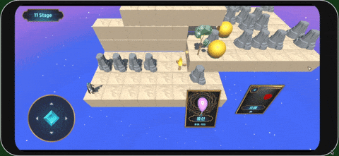
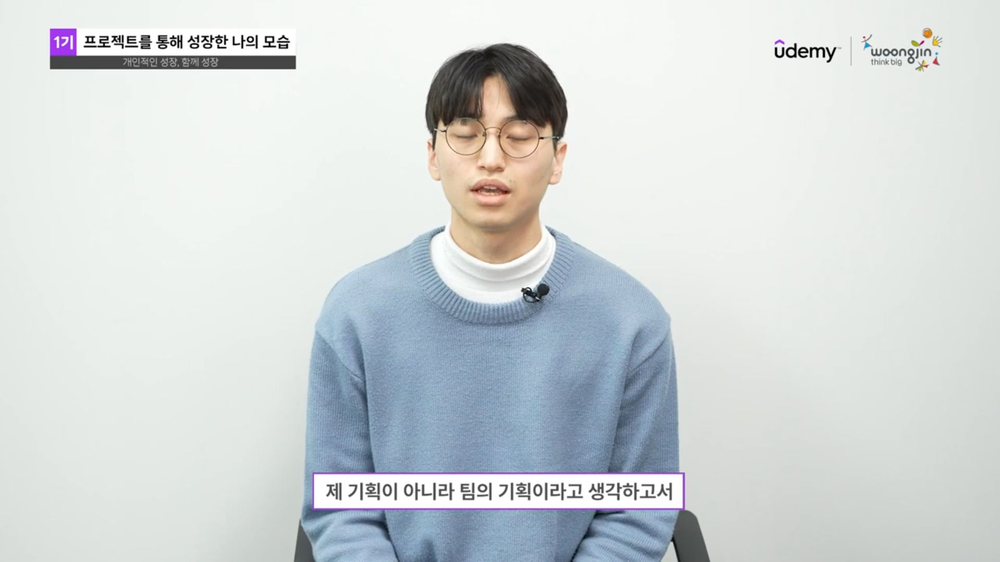

SELECTED / 01PUZZLE · SOLO
Octoplug
플러그를 연결하고 전력의 흐름을 설계하는 퍼즐 게임.
CORE
VIEW PROJECT ↗
연결 규칙 설계 · 단계별 퍼즐 구조 · Unity 프로토타이핑
카드를 누르면 선택한 프로젝트가 대표 영역으로 올라옵니다. 핵심 정보와 링크는 마우스를 올리지 않아도 바로 확인할 수 있습니다.

SELECTED / 01플러그를 연결하고 전력의 흐름을 설계하는 퍼즐 게임.
연결 규칙 설계 · 단계별 퍼즐 구조 · Unity 프로토타이핑
협업의 기준을 맞추고, 플레이로 검증하며, 반복은 자동화합니다.

TEAM PROJECT / 2023기획 의도를 공유하고 역할 사이의 판단 기준을 정리해, 팀이 한 방향으로 제작하도록 조율했습니다.
감에 머무르지 않고 플레이 흐름과 반응을 확인한 뒤, 문제를 고치고 다시 검증합니다.
반복 확인과 기록은 자동화하고, 결과를 해석해 다음 결정을 내리는 데 시간을 사용합니다.
Unity 클라이언트 개발
기획부터 구현과 협업까지, 직접 사용하는 도구.
What I've played
What I've made
GENRES I'VE WORKED WITH
Unity 5Godot 1Web 1
정식 출시 1웹 빌드 2그 외 미배포 또는 진행중
조금 더 알고 싶다면
A내용 작성 예정
A내용 작성 예정
A내용 작성 예정